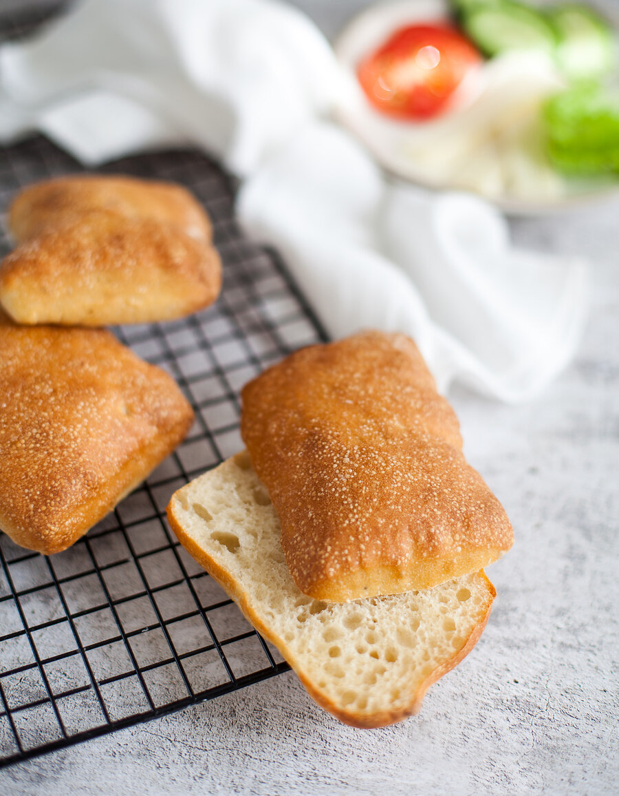

Рецептов панини множество. По сути, этот хлеб напоминает чиабатту, но проще и быстрее в приготовлении. А как его вкусно макать в оливковое масло с бальзамическим уксусом! Мне нравится вариант на спелом тесте. Спелое тесто — это порция теста, очень похожая по составу на основное тесто для хлеба. Спелое тесто медленно бродит и добавление его в основное тесто дает эффект, похожий на введение опары. Вкус, аромат и текстура улучшаются, хлеб дольше хранится. Впрочем, если времени на спелое тесто нет, вы можете приготовить первую порцию панини и без него, а после расстойки, в процессе формовки булочек, обрезать неровные края (у вас получится 80–100 г обрезков) и оставить их в качестве спелого теста для следующей партии. Хранится такое тесто в холодильнике 2–3 дня. Чаще всего я выбираю именно такой вариант. Перед добавлением в основное тесто спелое тесто нужно достать из холодильника хотя бы за 30 минут, чтобы дать ему согреться.
Для этого хлеба я рекомендую выбирать муку с высоким содержанием белка (11 и выше). В России в обычных супермаркетах с такими показателями мука бренда «Макфа» и пшеничная мука высшего сорта из шугуровского зерна (продается во «ВкусВилле»). Если такой муки нет, можно к обычной муке добавить муку 1 сорта.
для спелого теста:
для булочек: